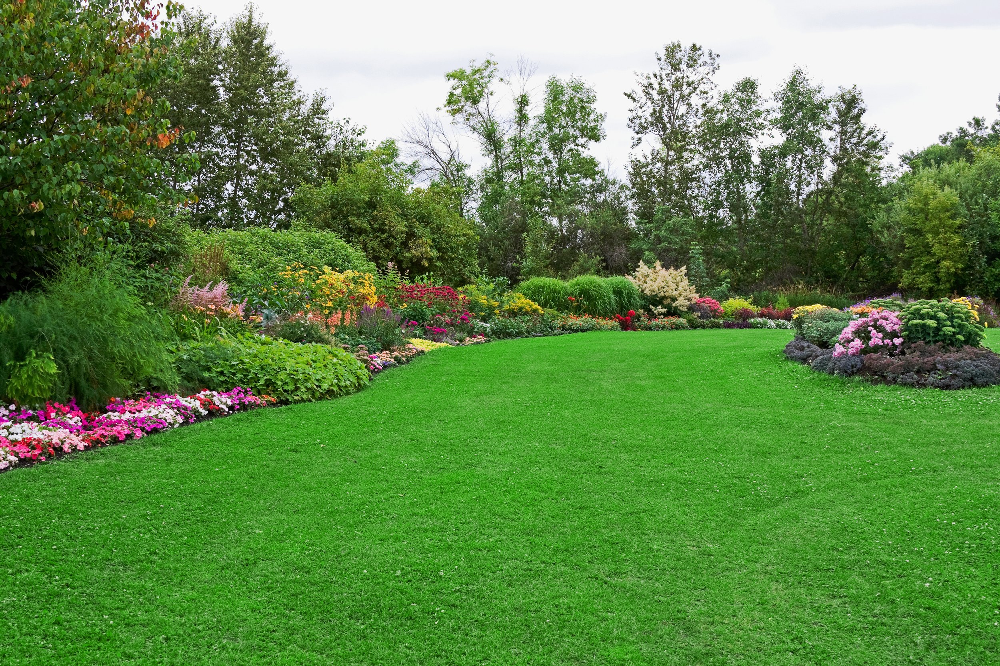

Get to know SLS
A local team, with
a personal touch.
Family-owned and serving South Charlotte for more than 30 years, Southern Landscaping Services helps homeowners keep up with lawns, beds, seasonal cleanup, and outdoor projects.

Southern Landscaping ServicesOur story
Rooted in South Charlotte.
Focused on good work.
Alex Lieske moved from Baltimore to Charlotte with his family in 2021 and bought Southern Landscaping Services. The business had already served South Charlotte for more than 30 years; Alex wanted to keep that work going and grow its residential services.
Today, Alex, Rob, and the team bring a personal approach to work ranging from lawn care and seasonal cleanup to planting and outdoor projects. The goal is simple: listen carefully, offer honest guidance, and take pride in the details.
We try to make those values practical: communicate clearly, arrive when scheduled, do the work we agreed to, and leave the property neat.
Explore what guides our workYears serving South Charlotte
Family-owned landscaping business
Care shaped around each customer
Get to know us
Good work is built
on good relationships.
Clear communication, showing up when scheduled, leaving the property neat, and doing what we say we’ll do are the standards SLS shares publicly.
How we workA clear, thoughtful process
From first conversation through scheduled service, learn what customers can expect.
Read about our process ↗ 02 / WHAT GUIDES USTrust in the little things
Explore the values and service commitments SLS shares with its customers.
Explore our values ↗ 03 / THE PEOPLEMeet the team
Get to know the team members named in the company’s public materials.
Meet the team ↗Start a conversation
Let’s talk about your yard.
Ask a question or request a free estimate from Southern Landscaping Services.
Contact our team